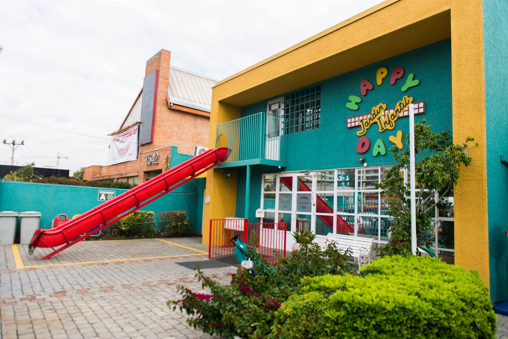
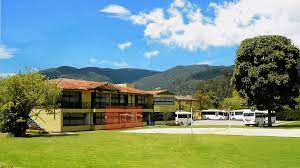
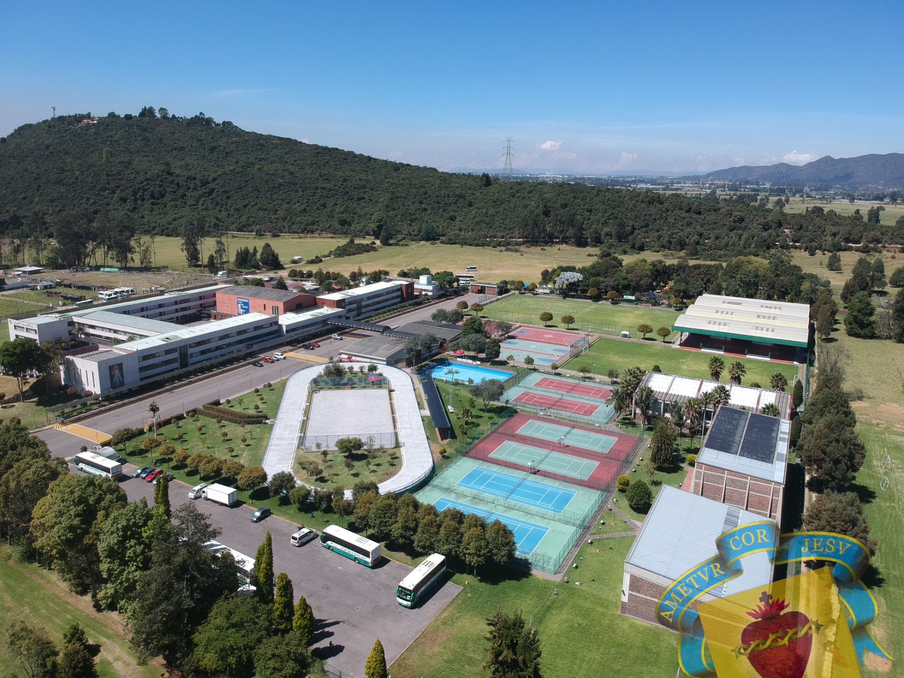
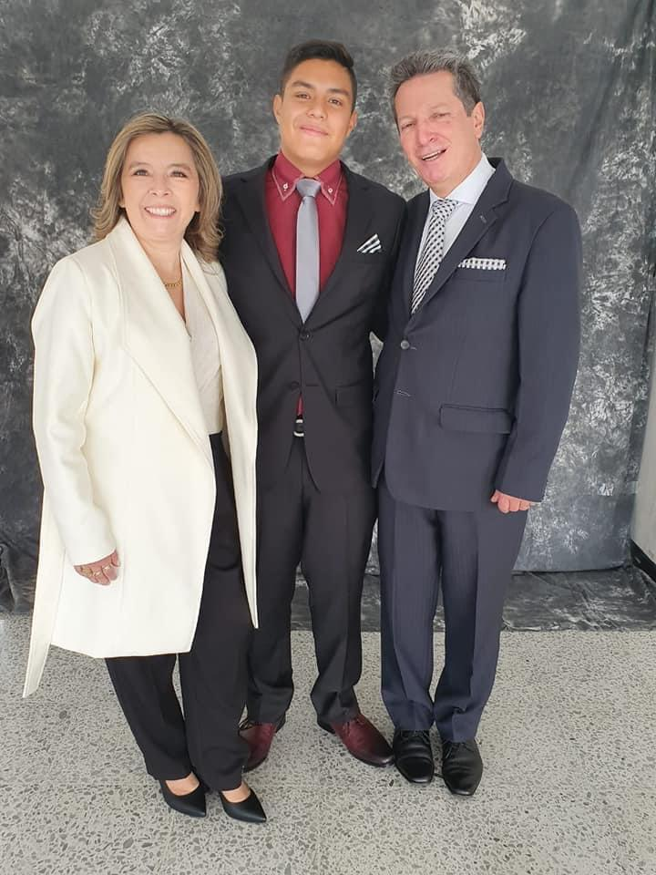
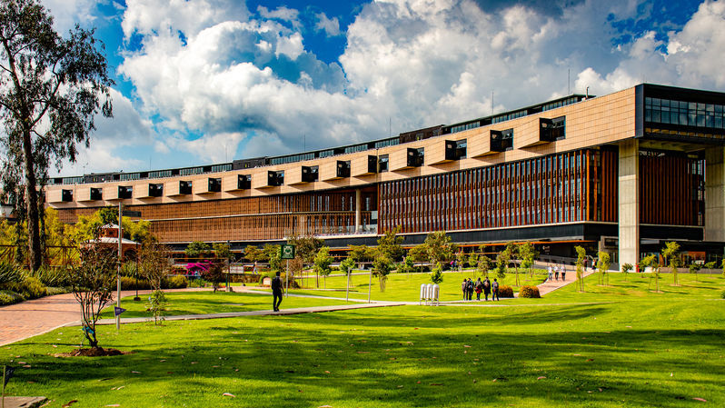
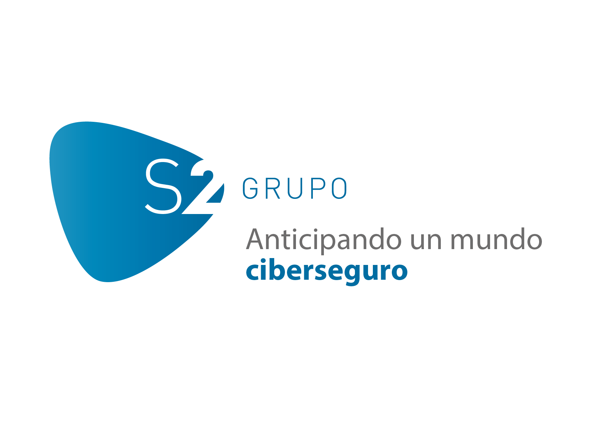
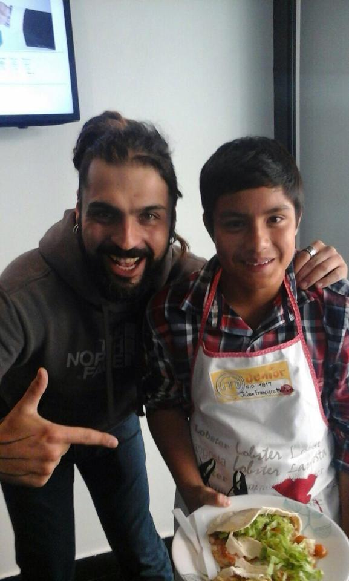

Blog Personal
Sobre mi:
Mi nombre es julian Francisco Martinez Carrillo, naci el 24 de agosto del 2002 en Bogotá, de padres Luis Francisco Martinez Hernandez y de madre Carmen Fabiola Carrillo Ortegon.
Actualmente tengo 20 años y voy en 7 semestre de Ingenieria Informatica en la Universidad de la Sabana.
A continuación hablare un poco sobre los años que han tenido impacto en mi vida como estudios o proyección a futuro:
2002:
Año de mi nacimiento en la ciudad de Bogotá
2003-2004
A mitad del 2003 a los 18 meses de nacido entre a el Taller infantil Los gnomos un proyecto liderado por Egresados de La Universidad de la Sabana.
Gnomos Propuesta
Plan de trabajo Gnomos
2004
En el 2004 luego de tener un aprendizaje basico en gnomos pase a el jardin infantil Happy Days donde dure dos años de mi juventud.


2006-2018
A mis 4 años entre al colegio Gimnasio San Angelo, donde desarrolle la mayor parte de mi vida como estudiante desde transición hasta Decimo de Bachillerato.
Sede de bachillerato

2018-2019
En 2018 ingrese a el colegio corazonista donde finalice mis estudios basicos para entrar a la universidad.
Colegio Corazonista.

Dia de mi graduación.

2020-2023
En 2020 ingrese a la universidad de la sabana a la carrera de Ingenieria Informatica donde me encuentro hoy en dia cursando 7 semestre de dicha carrera.
Universidad de la sabana.

Programa que estoy cursando.
2023-????
Mi plan a futuro es poder graduarme en aproximadamente dos años y poder comenzar a darle uso a mis estudios en la empresa S2 Grupo Colombia que se desarolla en seguridad informatica y hacer una especialización en dicha area.

Datos Adicionales
2015
En el 2015 tuve la experiencia de poder participar en master chef junior y ver que un hobby podia convertirse en algo mas que solo eso.
